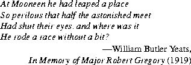

java.util.BitSetBitSet object is a set of bits that grows as needed. The bits of a BitSet are
indexed by nonnegative integers. Each bit can be individually examined, set, or
cleared. One BitSet may be used to modify the contents of another BitSet
through logical AND, logical inclusive OR, and logical exclusive OR operations.
public final classBitSetimplements Cloneable { publicBitSet(); publicBitSet(int nbits); public StringtoString(); public booleanequals(Object obj) public inthashCode(); public Objectclone(); public booleanget(int bitIndex); public voidset(int bitIndex); public voidclear(int bitIndex); public voidand(BitSet set); public voidor(BitSet set); public voidxor(BitSet set); public intsize(); }
21.2.1 public
BitSet()
This constructor initializes a newly created BitSet so that all bits are clear.
21.2.2 public
BitSet(int nbits)
This constructor initializes a newly created BitSet so that all bits are clear.
Enough space is reserved to explicitly represent bits with indices in the range 0
through nbits-1.
21.2.3 public String
toString()
For every index for which this BitSet contains a bit in the set state, the decimal
representation of that index is included in the result. Such indices are listed in
order from lowest to highest, separated by ", " (a comma and a space) and surrounded
by braces, resulting in the usual mathematical notation for a set of integers.
Overrides the toString method of Object (§20.1.2).
BitSet drPepper = new BitSet();Now
drPepper.toString() returns "{}".
drPepper.set(2);Now
drPepper.toString() returns "{2}".
drPepper.set(4); drPepper.set(10);Now
drPepper.toString() returns "{2, 4, 10}".
21.2.4 public boolean
equals(Object obj)
The result is true if and only if the argument is not null and is a BitSet object
such that, for every nonnegative int index k:
((BitSet)obj).get(k) == this.get(k)Overrides the
equals method of Object (§20.1.3).21.2.5 public int
hashCode()
The hash code depends only on which bits have been set within this BitSet. The
algorithm used to compute it may be described as follows.
Suppose the bits in the BitSet were to be stored in an array of long integers called, say, bits, in such a manner that bit k is set in the BitSet (for nonnegative values of k) if and only if the expression:
((k>>6) < bits.length) && ((bits[k>>6] & (1L << (bit & 0x3F))) != 0)is true. Then the following definition of the
hashCode method would be a correct
implementation of the actual algorithm:
public synchronized int hashCode() {
long h = 1234;
for (int i = bits.length; --i >= 0; ) {
h ^= bits[i] * (i + 1);
}
return (int)((h >> 32) ^ h);
}
Note that the hash code value changes if the set of bits is altered.
Overrides the hashCode method of Object (§20.1.4).
21.2.6 public Object
clone()
Cloning this BitSet produces a new BitSet that is equal to it.
Overrides the clone method of Object (§20.1.5).
21.2.7 public boolean
get(int bitIndex)
The result is true if the bit with index bitIndex is currently set in this BitSet;
otherwise, the result is false.
If bitIndex is negative, an IndexOutOfBoundsException is thrown.
21.2.8 public void
set(int bitIndex)
The bit with index bitIndex in this BitSet is changed to the "set" (true) state.
If bitIndex is negative, an IndexOutOfBoundsException is thrown.
If bitIndex is not smaller than the value that would be returned by the size method (§21.2.13), then the size of this BitSet is increased to be larger than bitIndex.
21.2.9 public void
clear(int bitIndex)
The bit with index bitIndex in this BitSet is changed to the "clear" (false)
state.
If bitIndex is negative, an IndexOutOfBoundsException is thrown.
If bitIndex is not smaller than the value that would be returned by the size method (§21.2.13), then the size of this BitSet is increased to be larger than bitIndex.
21.2.10 public void
and(BitSet set)
This BitSet may be modified by clearing some of its bits. For every nonnegative
int index k, bit k of this BitSet is cleared if bit k of set is clear.
21.2.11 public void
or(BitSet set)
This BitSet may be modified by setting some of its bits. For every nonnegative
int index k, bit k of this BitSet is set if bit k of set is set.
21.2.12 public void
xor(BitSet set)
This BitSet may be modified by inverting some of its bits. For every nonnegative
int index k, bit k of this BitSet is inverted if bit k of set is set.
21.2.13 public int
size()
This method returns the number of bits of space actually in use by this BitSet to
represent bit values.
Contents | Prev | Next | Index
Java Language Specification (HTML generated by Suzette Pelouch on February 24, 1998)
Copyright © 1996 Sun Microsystems, Inc.
All rights reserved
Please send any comments or corrections to doug.kramer@sun.com